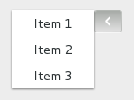

GtkMenuButton
The GtkMenuButton widget is used to display a popup when clicked on. This popup can be provided either as a GtkMenu, a GtkPopover or an abstract GMenuModel.
The GtkMenuButton widget can hold any valid child widget. That is, it can hold almost any other standard GtkWidget. The most commonly used child is GtkImage. If no widget is explicitely added to the GtkMenuButton, a GtkImage is automatically created, using an arrow image oriented according to GtkMenuButton:direction or the generic "view-context-menu" icon if the direction is not set.
The positioning of the popup is determined by the GtkMenuButton:direction property of the menu button.
For menus, the GtkWidget:halign and GtkWidget:valign properties of the menu are also taken into account. For example, when the direction is GTK_ARROW_DOWN and the horizontal alignment is GTK_ALIGN_START, the menu will be positioned below the button, with the starting edge (depending on the text direction) of the menu aligned with the starting edge of the button. If there is not enough space below the button, the menu is popped up above the button instead. If the alignment would move part of the menu offscreen, it is “pushed in”.
Direction = Down
-
halign = start
-
halign = center

-
halign = end

Direction = Up
-
halign = start

-
halign = center

-
halign = end

Direction = Left
-
valign = start

-
valign = center

-
valign = end

Direction = Right
-
valign = start

-
valign = center

-
valign = end

CSS nodes
GtkMenuButton has a single CSS node with name button. To differentiate it from a plain GtkButton, it gets the .popup style class.
GtkMenuButton
GObject ╰──GInitiallyUnowned ╰──GtkWidget ╰──GtkContainer ╰──GtkBin ╰──GtkButton ╰──GtkToggleButton ╰──GtkMenuButton
Constructors
Methods
Enumerations
Gtk.ArrowType
Used to indicate the direction in which an arrow should point.
Members
Gtk.ArrowType.Up
(0)
–
Gtk.ArrowType.Down
(1)
–
Gtk.ArrowType.Left
(2)
–
Gtk.ArrowType.Right
(3)
–
Gtk.ArrowType.None
(4)
–
The results of the search are